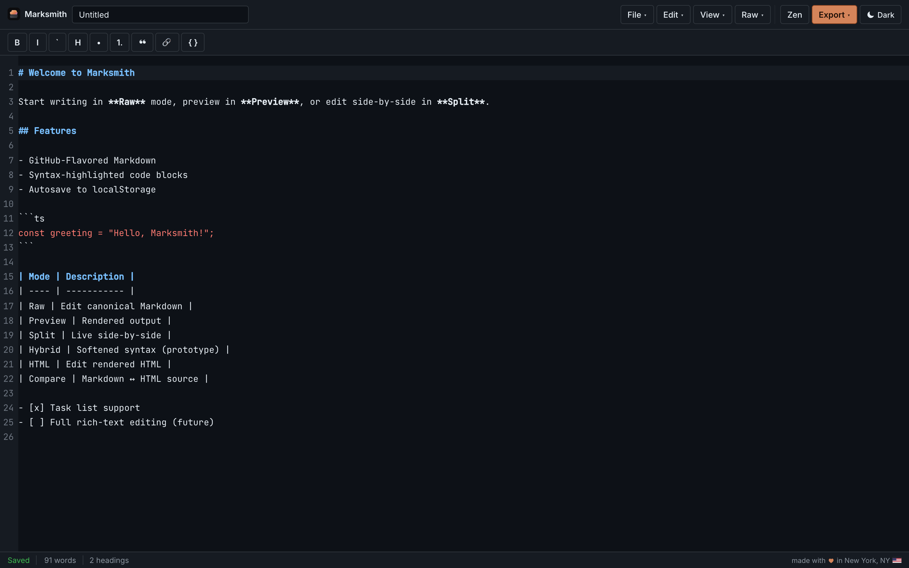

Your words are yours.
Documents live in your browser. Autosave stays on your device — no account, no upload, no server reading your drafts.
Local-first markdown
A private editor for technical writing. Markdown stays canonical — preview is derived, sanitized, and never the source of truth.
Showing split mode
Documents live in your browser. Autosave stays on your device — no account, no upload, no server reading your drafts.
The editor always holds plain .md text. Hybrid
decorations soften syntax visually without rewriting your source.
Rendered HTML flows through rehype-sanitize before it
reaches the DOM. Unsafe markup never becomes authoritative state.
Split mode
Split mode keeps CodeMirror and a live preview side by side with proportional scroll sync in both directions.

Raw & preview
Raw mode is a full CodeMirror 6 surface with formatting commands and keyboard shortcuts. Preview mode is read-only output you can trust.
.md anytime
Editor modes
Switch views without transforming your underlying Markdown string.
Free and open source under MIT. No sign-up. Install as a PWA from the editor for a dock icon and offline shell.